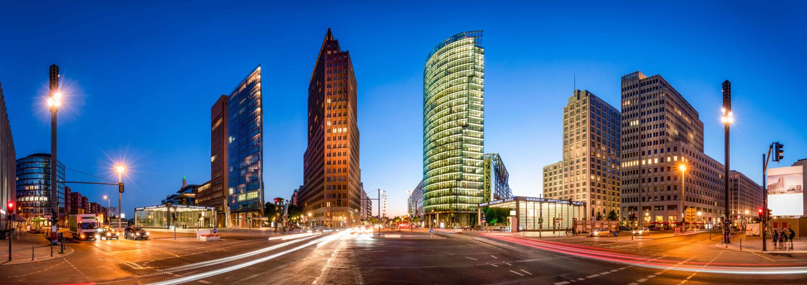

Informations sur berlin
berlin est la capitale d'allemagne, est une ville cosmopolite et dynamique, réputée pour son histoire fascinante, son architecture variée et sa scène artistique florissante.
Berlin est une ville cosmopolite, vibrante et culturellement diversifiée, où l'histoire tumultueuse se mêle à la modernité. Avec une scène artistique dynamique, une vie nocturne animée et une architecture variée, Berlin offre une expérience urbaine unique et captivante.
Berlin est une ville dynamique et cosmopolite qui attire des visiteurs du monde entier pour son histoire fascinante, sa culture vibrante et son atmosphère unique.

video generalise berlin